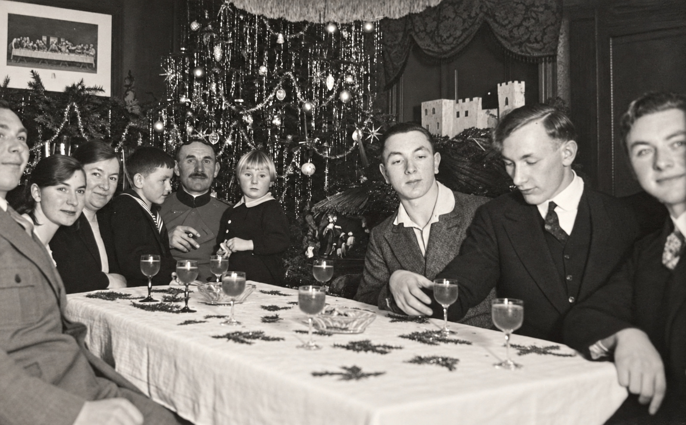
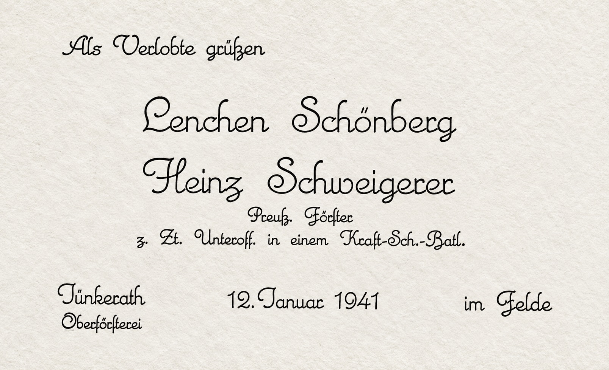
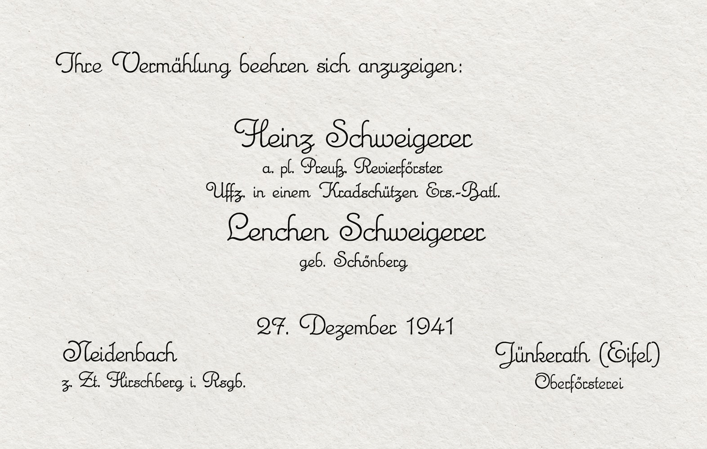
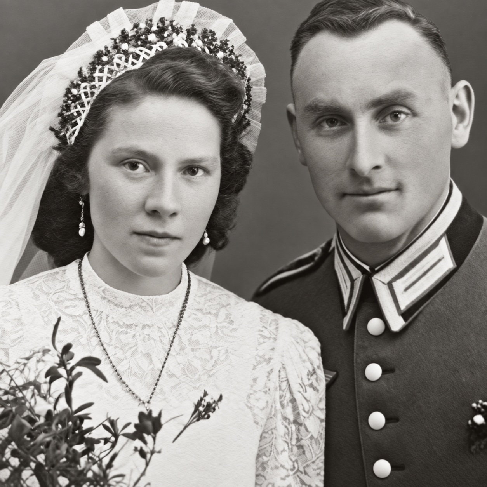
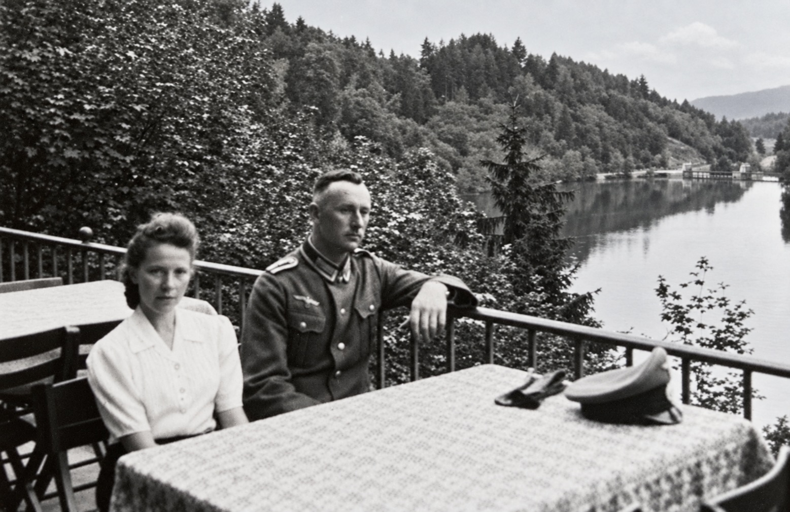
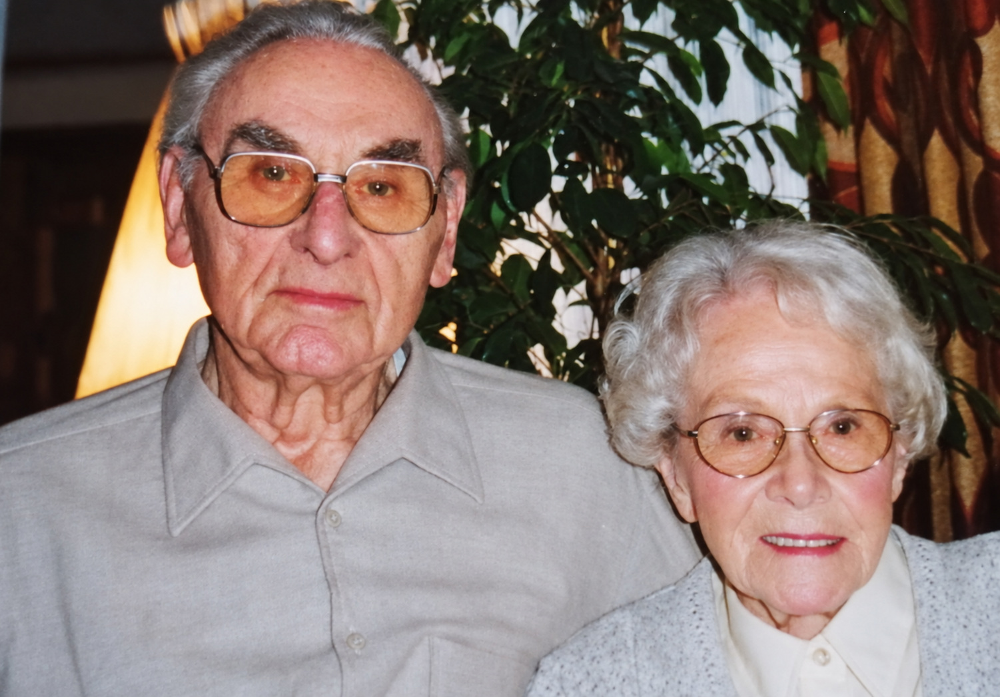
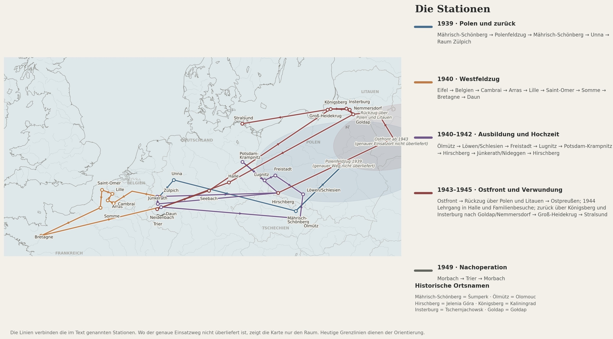
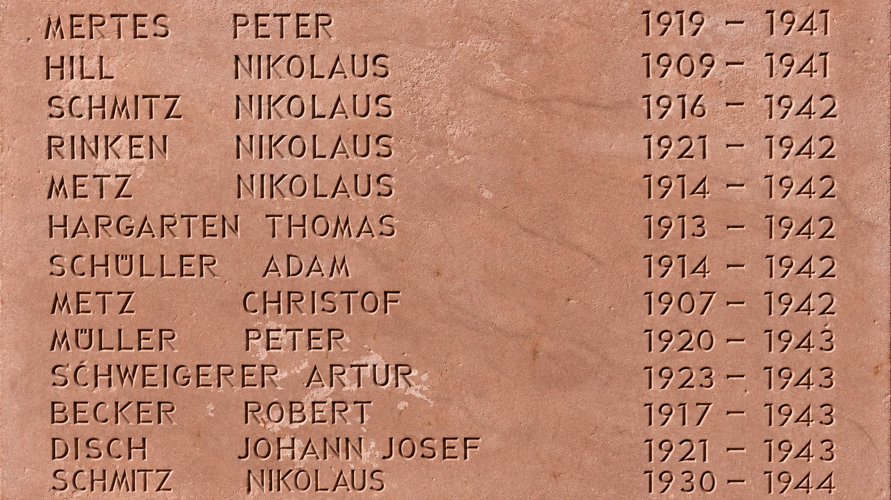
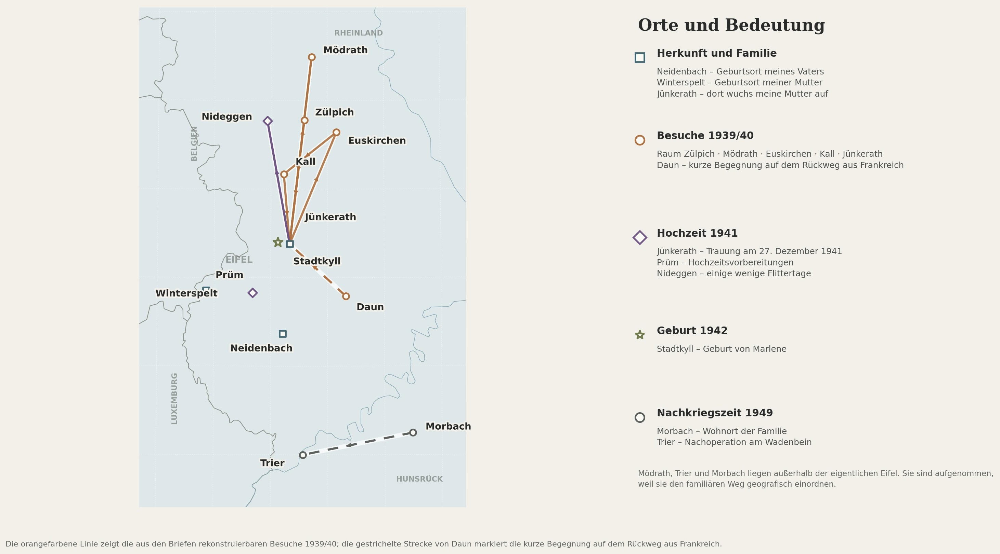

Ich selbst kenne diese Jahre nur aus den Erzählungen meiner Eltern, aus den Briefen, die sie sich schrieben, und aus einer Familienchronik, die mein Vater später verfasste. Es sind viele Briefe. Sie beginnen vor dem Krieg und reichen bis in die ersten Nachkriegsjahre. Darin geht es um Truppenverlegungen, Frontabschnitte, ausgefallene Züge und verweigerten Urlaub. Aber auch um ein Spitzenkleid aus Trier, die ersten Zähne eines Kindes und die Frage, ob der Vater rechtzeitig von der Geburt seines ersten Sohnes erfahren würde.
Die Chronik meines Vaters ist nüchterner. Sie verzeichnet Orte, Daten, Verwundungen und Versetzungen. Gelegentlich steht darin aber auch ein Satz, in dem die ganze Zeit sichtbar wird. Zusammen ergeben Briefe und Chronik ein Bild davon, wie meine Eltern zueinanderfanden, während fast alles um sie herum auseinanderbrach.
Meine Eltern Lenchen und Heinz stammten beide aus Försterfamilien. Mein Vater, Heinrich Josef Schweigerer, wurde am 8. März 1912 in Neidenbach in der Eifel geboren. Er war das vierte Kind von Nikolaus und Helene Schweigerer und wuchs in dem Forsthaus auf, das im selben Jahr erbaut worden war. Als sein Vater während des Ersten Weltkriegs Soldat war, blieb seine Mutter dort mit fünf Kindern allein zurück.
Mein Vater hatte eine Schwester, Sofia, und fünf Brüder: Josef, Hans, Klaus, Artur und Rudi. Mein Vater, Artur und Rudi wurden Förster oder wollten es werden. Josef schlug einen anderen Weg ein. Er wurde Bildhauer und starb als junger Erwachsener an Lymphdrüsenkrebs. Artur fiel 1943 mit zwanzig Jahren in der Nähe von Orel.

Mein Vater besuchte zunächst die Volksschule in Neidenbach und ab 1925 das humanistische Gymnasium in Prüm. Dort wohnte er im bischöflichen Konvikt. Nach fünf Jahren musste er es verlassen, weil er nicht die Absicht hatte, Priester zu werden. Er wollte in den Forstdienst. Nach einem weiteren Schuljahr in Heiligenhaus und der Mittleren Reife begann er 1932 seine Ausbildung. Die Lehrjahre führten ihn nach Kyllburg, Bitburg, Neustraßburg und Gerolstein. Danach besuchte er die Forstschule in Wittlich und wurde Hilfsförster.
Meine Mutter, Maria Magdalena Schönberg, genannt Lenchen, wurde am 18. Dezember 1912 im Forsthaus Winterspelt geboren. Auch ihr Vater war Förster. Die Familie zog zunächst nach Scheitenkorb, später nach Üdersdorf und Prüm. Meine Mutter besuchte ein Haushaltspensionat im St.-Josef-Kloster in Prüm und arbeitete anschließend im elterlichen Haushalt. Sie hatte acht Geschwister: die Schwestern Maria und Hilde sowie die Brüder Max, Peter, Hans, Klaus, Ludwig und Josef.
1938 wurde ihr Vater als Oberförster nach Jünkerath versetzt. Dort begegnete sie meinem Vater, der seit Ende 1937 bei der Oberförsterei Jünkerath beschäftigt war. Die beiden Försterfamilien brauchten also keinen Zufall, um einander kennenzulernen. Es reichte eine Versetzung.
Der Krieg traf die Familie meiner Mutter auf eine Weise, die man sich heute kaum noch vorstellen kann. Vier ihrer Brüder kehrten nicht zurück. Peter erlitt bei einem Partisanenangriff in der Nähe von Charkiw einen Bauchschuss, den er nicht überlebte. Klaus starb später in einem Lazarett an den Folgen einer Kopfverletzung. Bei anderen blieb lange unklar, wo sie gefallen waren. Für meine Mutter war die Möglichkeit, auch ihren Mann zu verlieren, deshalb keine entfernte Befürchtung. Sie hatte diesen Verlust in der eigenen Familie mehrfach erlebt. Auch die Familie meines Vaters hatte mit Artur bereits einen Sohn und Bruder verloren.
Der erste Tanz
Am 1. Mai 1938 tanzten Lenchen und Heinz zum ersten Mal miteinander. Meine Mutter schrieb später, sie habe damals „Feuer gefangen“. Bei meinem Vater ging es offenbar etwas langsamer. Er blieb zunächst zurückhaltend, und eine Zeit lang entwickelte sich aus der Begegnung nicht viel. Anfang 1939 wurde er nach Kempfeld versetzt. Wenige Monate später kam die Einberufung zur Wehrmacht.
Ein Brief, den meine Mutter ihm kurz vor dem deutschen Einmarsch in Polen schrieb, brachte die Sache wieder in Gang. Dieser Brief ist nicht erhalten. Er muss aber etwas bewirkt haben.
Mein Vater war seit Mai 1939 Soldat. Er gehörte einer motorisierten Aufklärungseinheit der 5. Panzerdivision an und überschritt am 1. September 1939 südöstlich von Ratibor die polnische Grenze. Seine Briefe berichten von langen Märschen, ständig wechselnden Orten und schließlich von der Begegnung mit sowjetischen Truppen an der vereinbarten deutsch-sowjetischen Demarkationslinie. Danach ging es zurück in die Garnison und Ende 1939 weiter nach Westen.
Als seine Einheit über Unna, Hesselbach und Sasserath schließlich in den Raum Zülpich verlegt wurde, war er der Eifel wieder näher. Damit wurden Besuche überhaupt erst möglich. Ende 1939 stand er überraschend in Jünkerath vor der Tür. Am 18. Februar 1940 trafen sich beide bei Verwandten in Mödrath. Noch blieb manches unausgesprochen. Beim nächsten Besuch am 9. und 10. März bekannte mein Vater meiner Mutter schließlich seine Liebe. Später bezeichnete er diesen Abend als ihre „kleine Verlobung“.
Danach begann das, was ihre Beziehung über Jahre bestimmen sollte. Fast jeder freie Sonntag hing von militärischen Genehmigungen, Dienstplänen und unzuverlässigen Zugverbindungen ab. Ein geplanter Osterurlaub fiel aus. Im April trafen sie sich in Euskirchen. Ende April wurde mein Vater in Kall abgeholt und konnte einige Tage in Jünkerath verbringen. Die nächste Begegnung war für Pfingsten vorgesehen. Dann begann der Krieg gegen Frankreich.
Mein Vater als Soldat
Der Weg meines Vaters führte durch die Eifel nach Belgien, über die Maas und weiter nach Frankreich. Seine Einheit kämpfte bei Cambrai, Arras, Lille und Saint-Omer, zog über die Somme bis zur Kanalküste und schließlich durch die Bretagne. Im Juni 1940 wurde er bei La Bassée durch einen Granatsplitter an der linken Hand verwundet. Es war die erste von insgesamt acht Verwundungen, die er während des Krieges erlitt.
Auf dem Rückweg konnte er im Juli 1940 bei Daun für kurze Zeit aus der Kolonne ausscheren und meine Mutter sehen. Im August und im Herbst folgten längere Urlaube. Am 12. Januar 1941 verlobten sich beide offiziell im Forsthaus Jünkerath. Von den Brüdern meiner Mutter, die im Feld standen, konnte keiner dabei sein. Von der Familie meines Vaters waren nur seine Eltern anwesend.

Die Briefe meines Vaters erzählen nicht nur, wo er war. Sie zeigen auch, wie er damals dachte. Vor allem in den ersten Kriegsjahren war seine Sprache deutlich von der nationalsozialistischen Propaganda geprägt. Er schrieb voller Stolz über die deutschen Feldzüge, sprach vom „Führer“ und glaubte an den Sieg. Über die militärischen Gegner äußerte er sich teilweise in entwürdigender Sprache. Selbst als der Krieg für Deutschland längst verloren schien, hoffte er noch auf eine Wendung.
Das gehört zu seiner Geschichte, und ich möchte es nicht verschweigen. Es wäre einfach, solche Stellen heute zu übergehen, weil sie nicht zu dem Vater passen, den ich später kennengelernt habe. Ebenso einfach wäre es, ihn ausschließlich aus heutiger Sicht zu beurteilen, ohne zu berücksichtigen, in welcher Zeit und in welcher Umgebung er aufgewachsen war.
Mein Vater war kein unbeteiligter Beobachter. Er war Soldat, wurde zum Offizier ausgebildet und führte später eine Kompanie. Er glaubte zumindest über lange Zeit an das Regime, an Hitler und an den deutschen Sieg. Ich weiß nicht, wie weit dies seine eigene gefestigte Überzeugung war und wie viel davon der übernommenen Sprache seiner Umgebung entsprach. Die Briefe lassen aber keinen Zweifel daran, dass er diesen Krieg anfangs für richtig hielt.
Damit war er nicht allein. Viele junge Männer seiner Generation waren in einer Gesellschaft aufgewachsen, in der Gehorsam, Vaterland und militärische Pflichterfüllung als hohe Tugenden galten. Die nationalsozialistische Propaganda knüpfte daran an und gab diesen Vorstellungen ihre verbrecherische Richtung. Das erklärt, warum mein Vater so denken und schreiben konnte. Es macht die Aussagen nicht besser, aber es ordnet sie in ihre Zeit ein.
Im Verlauf der Briefe verändert sich der Ton. Die großen Worte werden von der Wirklichkeit überlagert. Es geht zunehmend um Müdigkeit, Verwundungen, tote Kameraden, zerstörte Städte und die Sorge um Frau und Kinder. Der Krieg, der anfangs noch als siegreicher Feldzug erscheint, wird zu einer endlosen Trennung und schließlich zu einem Kampf ums Überleben.
Als mein Vater nach dem Krieg seine Chronik schrieb, war vom früheren Glauben an den Sieg nichts mehr übrig. Sechs Jahre Krieg, Millionen Gefallene und Verwundete, zerstörte Wohnungen und vernichtete Werte: alles umsonst, notierte er. Verantwortlich machte er eine Führung unter Hitler, die an Größenwahn gelitten und ihre eigenen Vorteile gesichert habe. Das war sein späteres Urteil. Es kam spät, aber es war eindeutig.
Kurze Besuche und lange Abschiede
Nach dem Frankreichfeldzug wurde mein Vater mehrfach versetzt. Er kam über Olmütz nach Löwen und Freistadt. Von Januar bis April 1941 nahm er an einem Lehrgang für Offiziersanwärter in Potsdam-Krampnitz teil. Danach war er bis 1943 in Hirschberg im Riesengebirge als Ausbilder eingesetzt.
Meine Mutter plante, ihn zu Ostern 1941 in Berlin zu besuchen. Wegen der schweren Erkrankung ihrer Mutter musste sie die Reise im letzten Augenblick absagen. Ihre Mutter starb am 23. April. Im Juli fuhr Lenchen dann nach Hirschberg. Anschließend bekam mein Vater Urlaub und konnte mit ihr nach Jünkerath zurückfahren.
Diese Besuche waren nie unbeschwert. Die beiden wussten von Anfang an, wie viele Tage ihnen blieben. Schon während des Zusammenseins stand der nächste Abschied im Raum. Trotzdem wurden gerade diese kurzen gemeinsamen Zeiten zur Grundlage ihrer Ehe. Viel mehr hatten sie nicht.
Ursprünglich wollten sie im Sommer 1941 heiraten. Doch dazu brauchten sie Papiere, militärische Genehmigungen und vor allem Urlaub. Alles verzögerte sich. Im Dezember ging es dann plötzlich schnell. Meine Mutter besorgte in Trier ein Spitzenkleid, einen feinen Schleier mit Myrtenzweigen, weiße Handschuhe, Strümpfe und Schuhe. Mein Vater hätte lieber in seiner grünen Forstuniform geheiratet. Wegen des Krieges entschied er sich jedoch für den grauen Soldatenrock. In Prüm wurden zweihundert Hochzeitskarten bestellt. Auch der Fotograf, die Brautjungfern, die Schleierkinder, das kirchliche Aufgebot und die Trauungserlaubnis mussten organisiert werden.

Am 22. Dezember 1941 heirateten sie standesamtlich in Birgel. Die kirchliche Trauung fand am 27. Dezember in der katholischen Pfarrkirche von Jünkerath statt. Gefeiert wurde im engsten Familienkreis im Forsthaus. Das Hochzeitsfoto zeigt meinen Vater in Uniform. Es ist ein Hochzeitsbild aus dem Jahr 1941 und keine Verherrlichung des Krieges. Die Uniform gehört zur historischen Wirklichkeit dieser Hochzeit. So heiratete man damals.

Am folgenden Tag brachen sie zu einer kurzen Hochzeitsreise nach Gemünd in der Eifel auf und wohnten im Hotel Burkhard. Am 31. Dezember fuhren sie nach Mödrath zu meiner Tante Maria Sohlbach. Die größere Hochzeitsreise sollte nach dem Krieg stattfinden. Zunächst bestanden die Flitterwochen aus einigen gemeinsamen Wochen in Hirschberg.

Bereits am 18. Januar musste meine Mutter wieder abreisen. Ihr Bruder Klaus war nach einer schweren Kopfverletzung im Lazarett gestorben. Selbst die ersten Wochen ihrer Ehe blieben vom Tod nicht verschont.
Eine Familie in Briefen
Am 5. Oktober 1942 wurde ihre erste Tochter Maria Helene, genannt Marlene, im Marien-Krankenhaus in Stadtkyll geboren. Eigentlich hatte meine Mutter in Trier entbinden wollen, dort war jedoch kein Bett frei. Als die Wehen einsetzten, blieb nur das näher gelegene Stadtkyll. Marlene wog achteinhalb Pfund. Mutter und Kind waren wohlauf.
Meine Tante Hilde informierte meinen Vater per Telegramm. Er konnte bald darauf kommen, seine Tochter sehen und an der Taufe am 9. Oktober in der Antoniuskirche in Jünkerath teilnehmen. Danach blieben ihm nur wenige Wochen mit Frau und Kind.
Von da an erlebte mein Vater die Entwicklung seiner Tochter überwiegend durch die Briefe meiner Mutter. Sie berichtete ihm genau, wie viele Gramm Marlene bei jeder Mahlzeit getrunken hatte und wie viel sie innerhalb einer Woche zugenommen hatte. Das Kind bekam „muckelige Ärmchen und Beinchen“, drehte bei jedem Geräusch den Kopf und wollte früh alles sehen. Nachmittags hielt es gelegentlich seine „Sprechstunde“, wie meine Mutter das ausgiebige Schreien nannte.
Aus „Titti“ wurde „Mausi“, „Schätzelein“ und gelegentlich der „kleine Stropp“. Marlene lernte sprechen, zog sich an Gegenständen hoch, ahmte die Erwachsenen nach und entwickelte einen ausgeprägten eigenen Willen. Ihr Vater war selten da, in ihrer Vorstellung spielte er trotzdem eine große Rolle. Sie betete für ihn und sagte immer wieder: „Vati kommt bald.“
Im Frühjahr 1943 zog meine Mutter mit Marlene von Jünkerath nach Neidenbach. Im Haus der Familie Thielen standen ihnen für die Dauer des Krieges zwei Räume zur Verfügung: eine Küche und ein Schlafzimmer. In diesen Tagen traf die Nachricht ein, dass Artur, der jüngere Bruder meines Vaters, bei Orel gefallen war.
Seit Mai 1943 war mein Vater wieder an der Ostfront. Innerhalb weniger Tage wurde er im Juli dreimal durch Granatsplitter getroffen. Bei der schwersten Verwundung wurden das linke Bein, das Trommelfell und beide Augen verletzt. Siebzehn Tage lang war er nach eigener Angabe taub und blind. Nach dem Lazarett kehrte er dennoch zur Truppe zurück.
Im November bekam er Erholungsurlaub. Zum ersten Mal verbrachte er Urlaubstage mit seiner Frau und seiner kleinen Tochter im eigenen Heim. Marlene machte ihre ersten Schritte und sagte bereits „Papa“. Bis zum nächsten Urlaub vergingen wieder fünf Monate.
Zu ihrem zweiten Geburtstag am 5. Oktober 1944 bekam sie eine Buttercremetorte mit einer großen Zwei und zwei weißen Kerzen. Familie und Nachbarskinder kamen. Der Vater fehlte. Als die Mutter ihr gratulierte, antwortete sie zuerst: „O, Vati kommt!“ Später rief sie: „Vati, komm doch bei Liebchen.“
Zu diesem Zeitpunkt war meine Mutter erneut schwanger. Das Kind war während eines längeren Heimaturlaubs meines Vaters im Frühjahr 1944 gezeugt worden. Beide wünschten sich einen Jungen, der nach seinem Vater Heinz heißen sollte. Während die Schwangerschaft fortschritt, rückte die Front immer näher an die Eifel heran. Bomberverbände überflogen die Dörfer, Tiefflieger schossen auf alles, was sich bewegte. Bei einem Aufenthalt in Steinborn musste meine Mutter mit Marlene im Garten Deckung suchen. Die Geschosse schlugen neben ihnen ein.
Am 27. Oktober 1944 verließ meine Mutter mit Marlene die Eifel. Mein Großvater Schweigerer begleitete sie auf der mühseligen Reise nach Thüringen. Zwei Tage später erreichten sie das Forsthaus Seebach bei Pößneck. Dort waren sie zunächst sicherer. Anfang November konnte mein Vater die beiden während einer kurzen Dienstreise nach Halle noch einmal besuchen. Es war das letzte Mal, dass sie ihn vor dem Ende des Krieges sahen.
Kurz vor dem errechneten Termin ging meine Mutter nach Ranis. Am 28. Januar 1945 gegen drei Uhr morgens begannen die Wehen. Noch während der Geburt schrieb sie an ihren Mann. Um 15.20 Uhr wurde Heinz-Josef geboren: 53 Zentimeter groß, acht Pfund schwer, blondes Haar, blaue Augen und rote Backen. Meine Mutter schrieb: „Genau nach Wunsch ist er ausgefallen.“

Am 4. Februar wurde der Junge noch im Krankenhaus getauft. Seine Paten waren mein Großvater Nikolaus Schweigerer und die Schwester meiner Mutter, Maria Sohlbach. Der Vater war nicht dabei. Die Postverbindungen waren weitgehend zusammengebrochen. Noch im Februar erkundigte er sich, ob es ein Junge oder ein Mädchen geworden sei. Aus den erhaltenen Briefen geht nicht hervor, wann ihn die Nachricht tatsächlich erreichte.
Marlene war stolz auf ihren kleinen Bruder. Sie half beim Baden, durfte ihm die Füße pudern und nannte ihn „mein Brüderlein Heinz-Josef“ oder einfach „kleiner Vati“. Der wirkliche Vati kämpfte währenddessen weiter im Osten.
Die Verwundung
Der Rückzug führte meinen Vater über den Raum Orel, die Pripjetsümpfe, Bobruisk und Kowel nach Kurland, ins Memelland und schließlich nach Ostpreußen. Anfang 1945 führte er dort eine Kompanie. Am 4. Januar wurde er an der linken Schulter verwundet. Am 16. Januar verschüttete ihn eine Explosion; er erlitt eine Gehirnerschütterung. Trotzdem blieb er bei der Truppe.
Der letzte erhaltene Brief stammt vom 21. März. Am 13. April 1945 wurde mein Vater bei Groß-Heydekrug westlich von Königsberg schwer verwundet. Er wollte nur für einen Augenblick aus dem Bunker ins Freie treten, als in seiner Nähe eine Granate einschlug. Ein Splitter zertrümmerte das linke Sprunggelenk.
Nach einer ersten Operation wurde er von Pillau über die Ostsee nach Stolpmünde gebracht. Vier Tage später kam er in ein Heereslazarett in Stralsund. Der Fuß ließ sich nicht erhalten. Am 3. Juni wurde nachamputiert. Später verlegte man ihn in das Marinelazarett Stralsund. Dort erlebte er das Kriegsende.

Der Weg zurück
Während mein Vater in Stralsund lag, hatte meine Mutter seit März 1945 kein Lebenszeichen mehr von ihm erhalten. Auch nach dem Kriegsende kam keine Nachricht. Heinz-Josef war häufig krank, erbrach fast jede Mahlzeit und nahm kaum zu. Die Kinderärztin fand keine organische Ursache. Meine Mutter war überzeugt, dass sich ihre eigene Angst auf den Säugling übertrug.
Als Thüringen von der Roten Armee übernommen werden sollte, beschloss sie, in die Eifel zurückzukehren. Gemeinsam mit ihren Schwestern Maria und Hilde machte sie sich mit den Kindern Anfang Juli 1945 auf den Weg. Hilde hatte ebenfalls einen Säugling bei sich. Heinz-Josef und Klaus-Peter waren fünf beziehungsweise sechs Monate alt, Marlene zweieinhalb Jahre.
Sie kamen noch vor der endgültigen Sperrung über die Demarkationslinie in die britische Besatzungszone. Danach ging es weiter, teils zu Fuß, teils auf Lastwagen und ein Stück mit einem Kohlenzug. Die Reise dauerte mehr als drei Wochen. Marlene marschierte immer wieder neben ihrer Mutter her. Nach der Chronik meines Vaters legte sie dabei fast hundert Kilometer zu Fuß zurück. Als sie Neidenbach erreichten, waren besonders die beiden Säuglinge stark abgemagert. Krank geworden war unterwegs keiner. Das war unter diesen Umständen schon viel.
Nun fehlte nur noch der Vater. Niemand wusste, ob er lebte. Am 14. August 1945 verließ mein Vater das Marinelazarett in Stralsund. Für die Heimreise brauchte er fünf Wochen. Drei Wochen wartete er allein an der sowjetisch-britischen Demarkationslinie bei Oebisfelde. Schließlich versuchte er den Übergang bei Jerxheim. Am 18. September gelang es ihm, die Grenze zu passieren.
Am 25. September stand er in Neidenbach vor seiner Familie. Meine Mutter hatte ihn zuletzt Anfang November des Vorjahres gesehen. Marlene kannte ihren Vater vor allem aus Erzählungen und Briefen. Heinz-Josef sah ihn zum ersten Mal. Mein Vater kam mit einem amputierten Unterschenkel zurück. Die Freude darüber, dass er überhaupt zurückkam, überwog alles andere.
Für meine Mutter endete damit eine jahrelange Zeit des Wartens. Vier ihrer Brüder waren aus dem Krieg nicht heimgekehrt. Auch aus der Familie meines Vaters war Artur mit nur zwanzig Jahren gefallen. Ihr Mann dagegen stand wieder vor ihr. Schwer verwundet und dauerhaft gezeichnet, aber am Leben.

Die Familie nach dem Krieg
Mit der Heimkehr meines Vaters war der Krieg nicht einfach vorbei. Das Forsthaus seiner Eltern war von französischen Soldaten beschlagnahmt worden. Als die Familie es im Oktober zurückbekam, waren Vorräte, Geflügel und zahlreiche Gebrauchsgegenstände verschwunden. Drei Wochen lang wurde geputzt, bevor das Haus wieder bewohnbar war. Am 25. Oktober zogen meine Eltern mit den Kindern aus den beiden Räumen bei der Familie Thielen in das Forsthaus.
Der Alltag blieb schwierig. Viele Eisenbahnbrücken und Tunnel in der Eifel waren zerstört. Wer nach Köln wollte, musste zunächst zu Fuß nach Daun oder Hohenfels gelangen und hoffen, unterwegs ein Fahrzeug zu finden. Geld hatte wenig Wert. Butter, Zigaretten und andere Waren wurden auf dem Schwarzmarkt gehandelt. Im November schaffte sich die Familie eine Kuh an. In einem Haus mit kleinen Kindern war Milch wichtiger als Reichsmark.
Im Februar 1946 wurde mein Vater wieder in den Forstdienst übernommen. Wegen seiner Verletzung konnte er nicht mehr im Außendienst arbeiten. Er bewarb sich deshalb um eine Forstsekretärstelle in Morbach. Der bisherige Stelleninhaber war im Krieg gefallen. So begann dort das Leben, in das später auch ich hineingeboren wurde.
Mit der Heimkehr war auch die Behandlung der Verletzung nicht abgeschlossen. Der amputierte Unterschenkel bereitete weiterhin Probleme. Im März 1949 musste mein Vater deshalb noch einmal in Trier operiert werden. Dort wurde nicht erneut amputiert. Lediglich das Wadenbein musste nachkorrigiert werden.

Während mein Vater im Krankenhaus lag, schrieb meine Mutter weiter aus Morbach. Inzwischen waren vier Kinder da. Marlene ging mit ihrer Mutter zur Kirche, spielte bei Gabi, lernte Rollschuhfahren und bemalte heimlich ein Ei als Ostergeschenk. Heinz-Josef unternahm eigenmächtige Streifzüge zum Gotterbach, warf Steine ins Wasser und sammelte Dinge „für unser Auto“. Ulli besuchte bereits den Kindergarten. Anfangs war sie dort ängstlich gewesen, inzwischen machte sie aufmerksam und bereitwillig mit. Artur war noch klein, trank sein Fläschchen und konnte sich längere Zeit allein beschäftigen.
Aus Kriegsschauplätzen und Truppenbewegungen waren Kindergarten, Kinderwäsche, Gottesdienste, kleine Ausreißer und die Sorge um den Vater im Krankenhaus geworden. Es war kein leichtes Leben, aber es war das gemeinsame Leben, auf das meine Eltern so lange gewartet hatten.
Im März 1949 las meine Mutter zusammen mit den Kindern noch einmal die alten Frontbriefe. Danach schrieb sie meinem Vater:
Du bist zu uns zurückgekehrt. Ein großes Opfer hast Du ja bringen müssen. Du bist doch trotzdem der Gleiche geblieben, bist mir ein guter Mann und den Kindern ein guter Vater.
Dieser Satz fasst ihre Geschichte vielleicht besser zusammen als alles andere. Meine Eltern fanden kurz vor dem Krieg zueinander. Sie heirateten während eines Fronturlaubs, bekamen ihre ersten Kinder in Zeiten der Trennung und wussten oft nicht, wann und ob sie einander wiedersehen würden. Mein Vater kehrte mit einem amputierten Unterschenkel zurück. Meine Mutter hatte die Kinder durch Bombenkrieg, Evakuierung und Zusammenbruch gebracht und zugleich vier ihrer Brüder verloren.
Sie hatten den Krieg überlebt. Nun mussten sie lernen, miteinander zu leben. Aus den seltenen Besuchen, den Feldpostbriefen und der Hoffnung auf den nächsten Urlaub wurde schließlich eine Familie. Zu dieser Familie gehörte einige Jahre später auch ich.